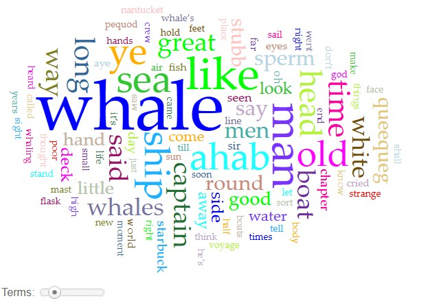
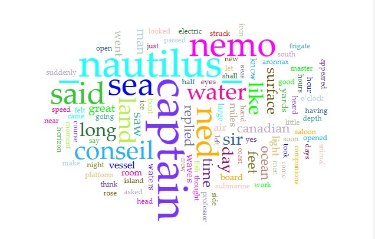
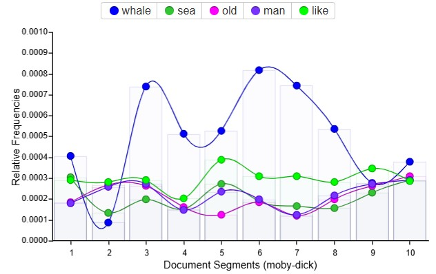
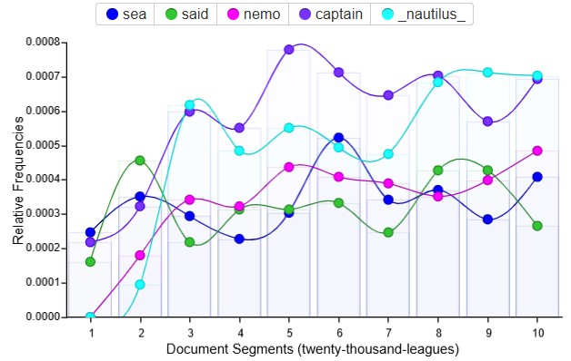

For this assigmnent, I have chosen to compare Moby Dick and 20,000 Leagues Under The Sea.
I chose these two stories, as they're both mid-19th century novels relating to the ocean, and I'm interested to see how their nautical-related language differs and are similar.



